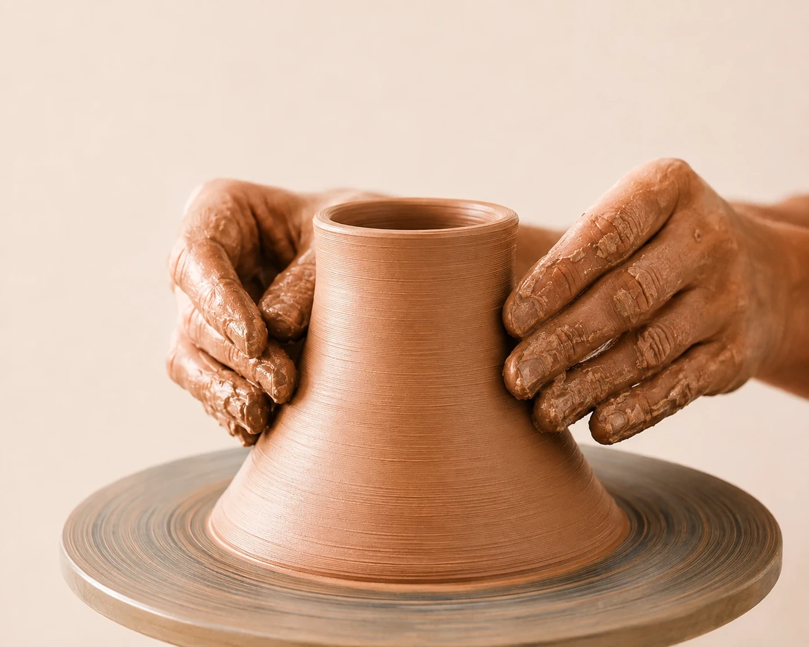
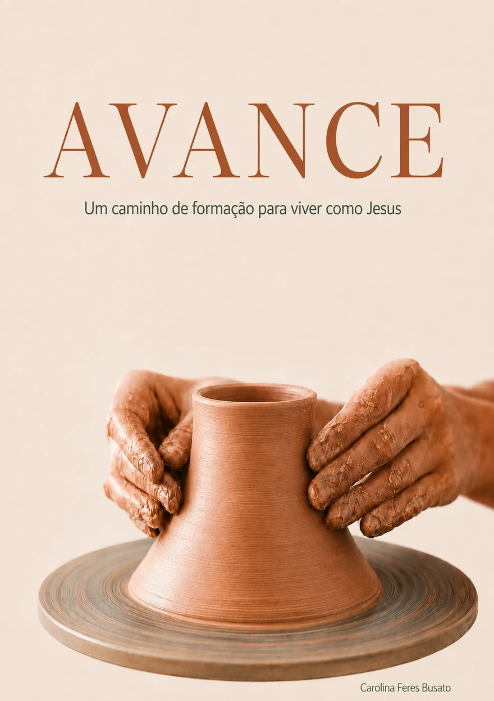
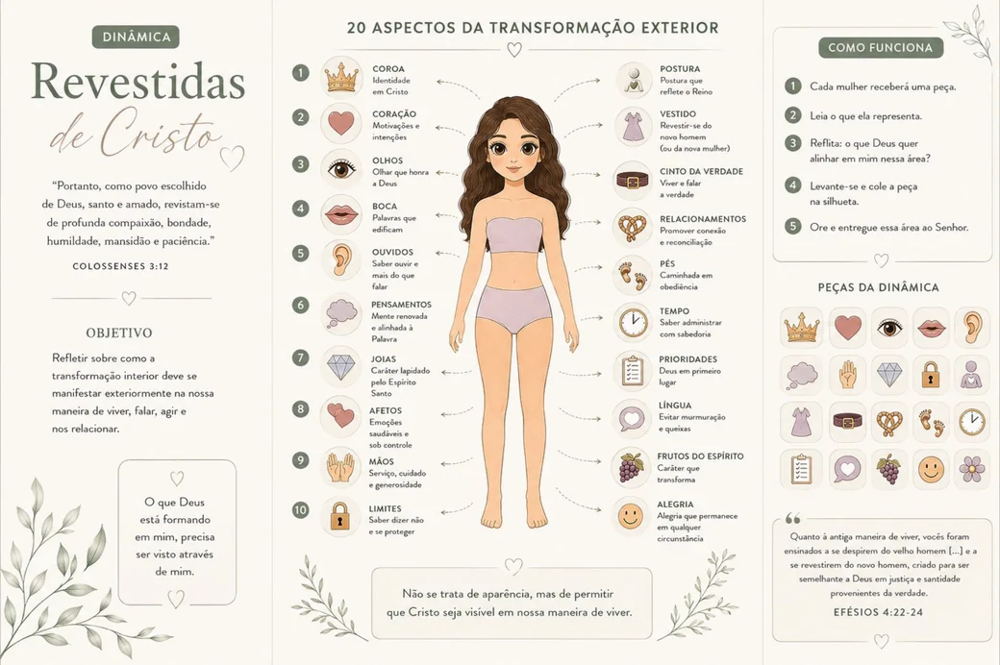
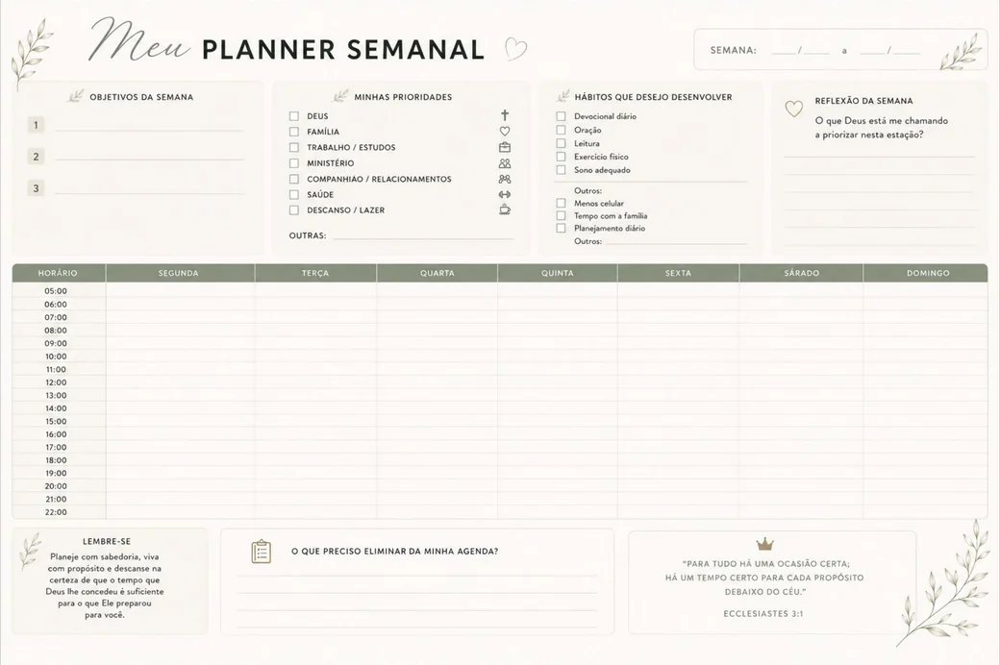

01
O Chamado
As desculpas, nossa nova identidade, o chamado de Abraão, distrações e a entrega.
Um caminho de formação para viver como Jesus
Com Carolina Feres Busato

AVANCE é um convite para prosseguir.
Ao longo deste caminho, você será conduzida a aprofundar seu relacionamento com Deus, permitir que Ele transforme sua vida interior e desenvolver uma maneira de viver cada vez mais semelhante à de Jesus.
Como o barro nas mãos do oleiro, somos formadas com amor, propósito e paciência. Cada encontro é uma oportunidade de permanecer, amadurecer e avançar.
Como o barro nas mãos do oleiro, assim são vocês nas minhas mãos. Jeremias 18:6
O ponto de partida
Discipulado é caminhar com Jesus, aprender com Ele e, pouco a pouco, tornar-se mais parecida com Ele.
É uma caminhada relacional de transformação, na qual alguém decide organizar sua vida ao redor de Cristo. Não se trata apenas de adquirir conhecimento bíblico, frequentar encontros ou concluir um curso, mas de permitir que Jesus forme seu caráter, estabeleça Seus valores e participe de cada decisão.
Por isso, discipulado não é um curso com início e fim, mas um estilo de vida que continua enquanto caminhamos com Cristo.
Três movimentos simultâneos
Aprender a relacionar-se com Jesus.
Deixar-se transformar por Jesus.
Participar da missão de Jesus.
A jornada
Cada módulo prepara o próximo. Você começa respondendo ao chamado e termina aprendendo a conduzir outras pessoas pelo mesmo caminho.
As desculpas, nossa nova identidade, o chamado de Abraão, distrações e a entrega.
Devocional, oração, leitura da Bíblia, jejum, solitude e servir.
A velha maneira de viver, a batalha da mente e o fruto do Espírito.
O amor: o que não é amor, o que é amor, 1 Coríntios 13:4–7.
Identificar feridas, perdoar e liberar, substituir mentiras por verdades da Palavra.
Vida abundante, cuidado com o corpo, relacionamentos, postura e testemunho.
Prioridades segundo o Reino, hábitos e planejamento da agenda.
O princípio da semente, permaneça, unidade e o chamado.

O material
Cada participante recebe o material completo dos oito módulos, com o conteúdo dos encontros, as passagens bíblicas de cada tema e espaço para anotações e respostas pessoais.
A leitura é feita ao longo da semana; o encontro é onde a turma conversa sobre o que foi lido e vivido.
2026 · Primeira edição
Recursos
Baixe, imprima e leve para o grupo. São arquivos em PDF, prontos para impressão.

Dinâmica em grupo
Vinte aspectos da transformação exterior, da coroa aos pés. Cada mulher recebe uma peça, reflete sobre o que ela representa e a coloca na silhueta. Baseada em Colossenses 3:12 e Efésios 4:22–24.
Baixar PDF
Ferramenta de apoio
Objetivos da semana, prioridades, hábitos a desenvolver e a grade de horários das 5h às 22h. Feito para acompanhar o módulo de Gestão do tempo e continuar depois dele.
Baixar PDFQuem conduz
“A Palavra que Deus falou ao meu coração foi: AVANCE. Não pare. Não retroceda.”
Olá, querida mulher! Seja muito bem-vinda, você que decidiu avançar no relacionamento e no conhecimento de Jesus. Essa é a melhor decisão da sua vida.
A jornada que começa agora será linda, cheia de descobertas, ajustes, restaurações e crescimento. Será um tempo de aparar arestas, aprender, amadurecer, rir e também chorar.
Minha oração é que o Espírito Santo use este material para fortalecer sua fé, renovar sua mente, moldar seu caráter e formar em você a imagem de Jesus.
CarolinaAutora e facilitadora do Avance
Para quem já fez o Avance
Se o AVANCE já formou você, você também pode conduzir outras mulheres pelo mesmo caminho. Deixe seus dados e entramos em contato sobre a formação de facilitadoras.
Mateus 4:19
Mesmo que você ainda tenha dúvidas sobre como será essa caminhada, apenas permita-se continuar. O caminho se revela à medida que é percorrido.
Quero avançarInscrição
Avisamos você por WhatsApp com as datas, o local e os próximos passos da turma.